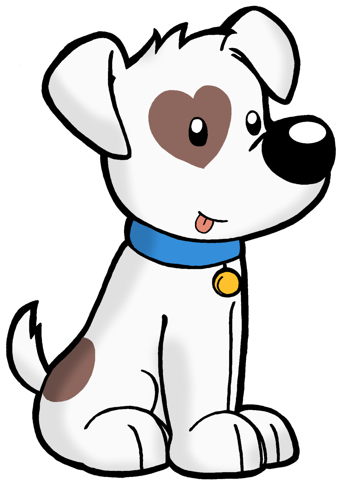
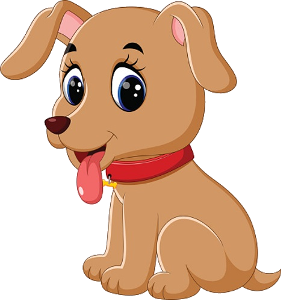

An essay on my pet dog is one of the most interesting and trending topics at school for essay writing. A dog is considered a man’s best and most faithful friend. Kids love playing with their pet dogs and when given an opportunity they jump to the idea of writing an essay on my pet animal dog. They try to express their thoughts and feelings about their lovely friend in the best possible way.


feelings about their lovely friend in the best possible way